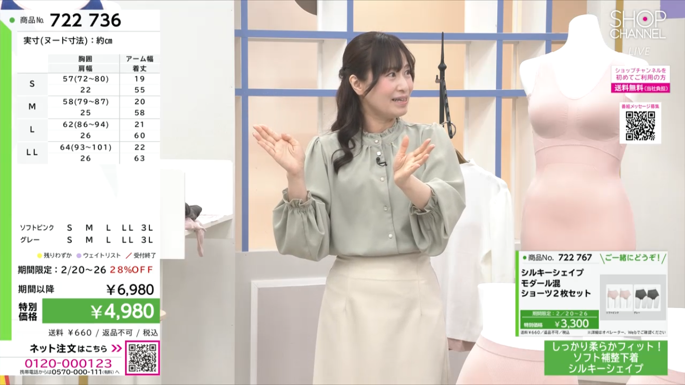

Story
遠回りしてきた、その分だけ
いろんな場所で、
いろんな人の話を聞いてきた。
それが今の言葉の温度になっている。
不動産営業、WEBマーケティング、コピーライティング、Airbnbホスト、日本語教師、探偵事務所のアシスタント……。華やかとはいえない、遠回りの連続だった。
でも振り返ると、どの仕事も「人の話を聞くこと」「相手に合わせて言葉を選ぶこと」の繰り返しだった。ハワイに一人で1か月滞在したのも、「知らない場所で、知らない人と話す自分」を試したかったから。
趣味で始めた占い・カウンセリング系TikTokでは、初期投稿が61万回超再生された。「つい聞いてしまう」のは、きっとそういう遠回りの積み重ねのおかげだと思っている。
「伝えたいから、話している」——それが伝わる出演者でありたい。
